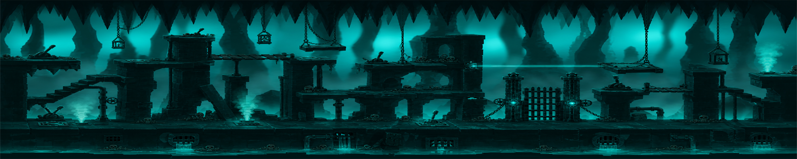
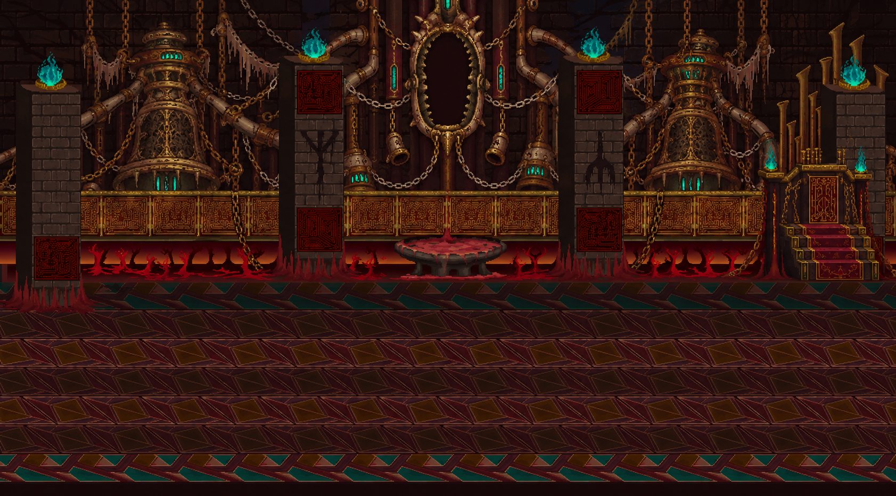
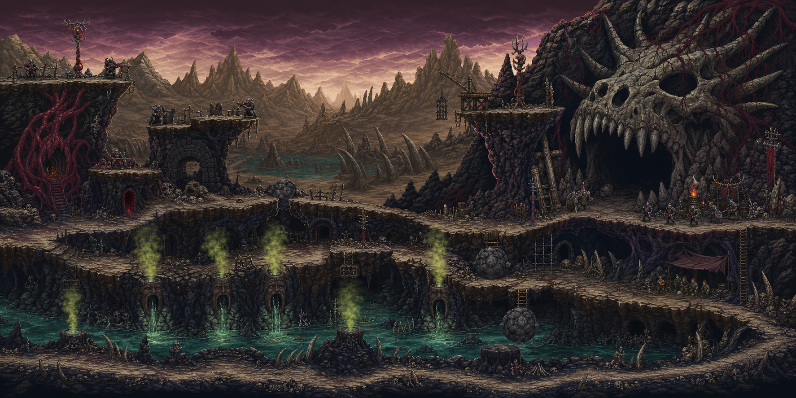
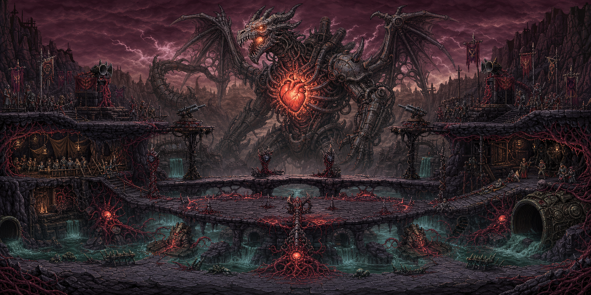
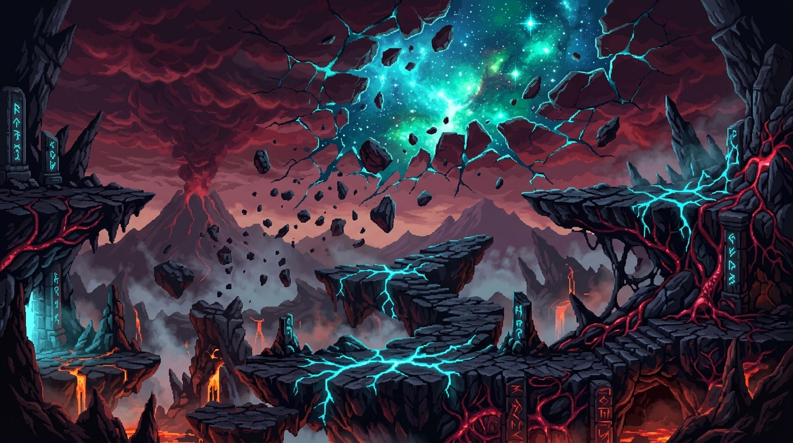
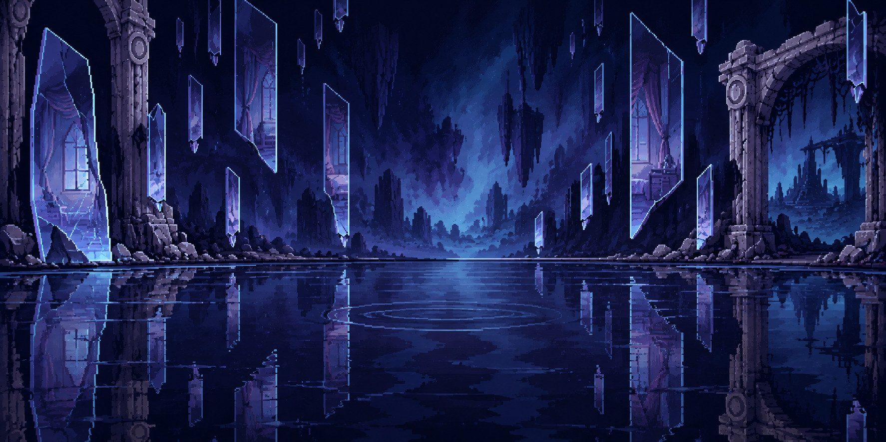
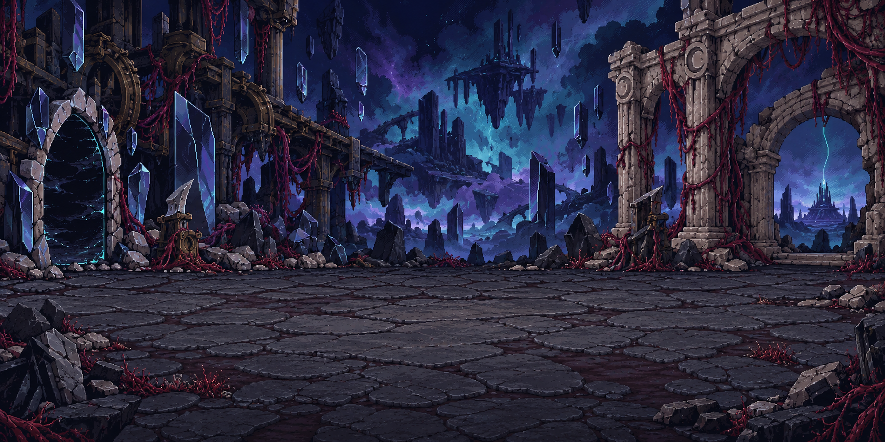
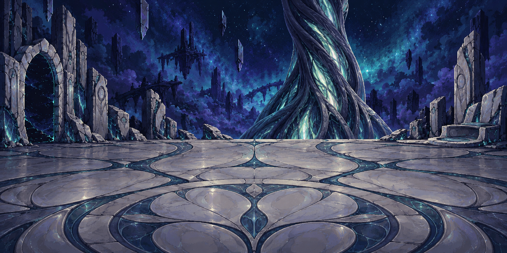

Chương 3 — Calvaria: người chết không phải mệnh lệnh
Rời Sakuri, Jamerson đang giữ Mắt và Tai, đưa Heniana theo tuyến xe có giấy giáo hội tới Calvaria. Ông có quan hệ trao đổi nghiên cứu từ trước, nhưng Voro chưa chịu giao Cái Lưỡi. Bà muốn một điều lớn hơn tiền: đưa đứa con đã chết của mình trở lại.
Calvaria thu phí ghi tên, giữ hài cốt và cho người sống nghe lời người đã khuất. Lưỡi có thể gọi dấu hồn, lưu mẫu giọng và đóng dấu khế ước lên sổ, bình hoặc người đã tiếp xúc nghi lễ. Giáo hội biến cả linh hồn lẫn nỗi nhớ thành nguồn nuôi bộ máy. Lệnh đã lưu vẫn chạy bằng nguồn tại chỗ khi lõi được mang đi.
3-1. Con đường đơn độc

Đội Deep không có giấy giáo hội. Heni dễ bị nhận ra nên họ đi đường dân tị nạn, qua những nấm mộ của gia đình không đủ tiền vào thành. Nhóm giúp đoàn người bị đuổi khỏi vành mộ; người hành hương cảnh báo Slayer săn người không có dấu trong rừng. Loa bên đường thu tên và câu nói của người qua trạm. Ghost cảm thấy nhịp phát lặp, chưa biết trong giáo đường đang thương lượng điều gì.
3-2. Rừng Đồ Tể

Slayer giữ người tại bãi tập kết, gom hài cốt và dẫn linh hồn về các bình. Nhóm cắt bẫy, khóa đường nhựa độc, đánh qua những đợt phục kích. Đồ Tể Trưởng xoay lưỡi hái giữ lối cuối; họ dùng gốc hóa đá che nhịp xoay rồi đánh ngắt khi lưỡi hái mắc.
Trên xe vật tư bị bỏ lại có phiếu giáo hội khớp dấu MuCEM. Jamerson đi tuyến xe chính thức; dấu ấy chỉ cho biết mạng hàng của ông nối tới pháo đài phía trước. Người được giải ở bãi săn theo nhóm qua chốt rừng.
3-3. Pháo đài Linh hồn

Các dây từ bình chạy tới lá chắn và khẩu pháo. Tại van đầu, đội thấy ngắt nguồn chỉ dừng máy; dấu trói trên bình còn giữ linh hồn. Muốn giải họ phải tháo dấu. Phá thẳng bình làm lá chắn sụp nhanh hơn nhưng hủy linh hồn bên trong, một tổn thất không thể trả lại sau trận.
Giáo sĩ Hồn Vương giữ các trạm. Khi mất thân người, dấu hồn hắn nhập vào Linh Vượn bọc giáp đá. Nhóm ngắt nguồn, né cú đập rồi đánh khớp để mở đường. Tiền đồn báo động, cổng mặt đất đóng. Một tù nhân chỉ lối xuống thang xích; đội chèn phanh phụ rồi cùng đoàn được cứu xuống chân tường thành.
3-4. Hầm ngầm và người phu

Giữa các cổng đối trọng và van xả nóng, nhóm cứu một người phu bị kẹt dưới nền đường vận chuyển. Anh từng đưa vật tư buồng Heniana vào kho, giữ phiếu có dấu Voro và biết Jamerson được hẹn tiếp kiến. Anh cũng từng làm việc ở Akam, nhưng lúc này việc cần làm là đưa anh ra khỏi hầm.
Nhóm khóa van, kéo cáng qua. Áp dư phá đoạn nền đã nứt, buộc đoàn xuống cửa thoát nước. Họ ghép bè, để Heni cùng người bị thương ở khoang có che rồi xuôi Sông Oán Hận.
3-5. Sông Oán Hận

Quái xương bám mạn, nước độc chảy xiết, các vật cản trôi vào mũi bè. Nhóm dùng mái chèo, vật ném và những kỹ năng đang có để giữ bè khỏi gờ đá. Bão sương đẩy họ vào doi cát dưới lò thiêu bỏ hoang. Bia tưởng niệm dưới lò ghi đơn vị cũ của Deep: hài cốt những người tử trận từng được đưa về đây, trước khi giáo hội chuyển lò sang thu giọng và giữ dấu hồn. Anh nhận ra tên Vance “Mắt Chim” và Đại úy Balthazar. Hai dấu hồn còn lưu bên bia đáp lại khi anh gọi.
Vance nhìn Solei trong thế thủ karate và Heni đứng sau Deep, trêu anh từ ngày nào đã bỏ nghề anh hùng để trông trẻ. Deep đáp rằng hai đứa còn biết im hơn hắn. Vance nhắc món nợ rượu năm xưa, rồi bảo hôm nay thấy anh còn sống thì coi như xóa nợ.
Balthazar vẫn mang dấu vết nhát đao từng đỡ cho Deep. Anh nhìn vết thương, nghẹn lời. Người chỉ huy nói ông chọn giữ anh sống để có ngày được nghỉ, không phải để anh tự bắt mình chết thay người khác mãi. Cuộc gặp không làm Deep quên những người đã mất. Nó cho anh một lời từ biệt khác điều giáo hội vẫn phát ở các trạm.
Balthazar: “Chúng dùng tên bọn tao để bắt người ta quỳ. Mày gặp lại cái giọng này trong giáo đường thì tìm cái chuông đang phát nó. Đập nó đi.”
Khi bè rời bờ, Deep vẫn đau, nhưng thôi coi mọi người đi cùng là một món nợ mình phải chết mới trả xong. Cửa xả đưa họ lên khu hành hương bên trong vành thành.
3-6 và 3-7. Đường hành hương, Chợ Xương và Barnaby

Đội đi cùng những gia đình ôm di ảnh và túi xương. Ở trạm nhận lễ, một bà mẹ bị đòi thêm phí; trong chợ, người ta bán hài cốt để mua thêm một lần nghe giọng con. Lính xương bảo vệ các quầy tái ráp khi trạm cấp còn nguồn. Nhóm mở tuyến qua chợ, tìm cách đưa người bị thương tới nơi nghỉ.

Heni sợ Lưỡi sẽ bắt mình nói bằng giọng Heniana. Solei nhắc lần cô bé giấu phần bánh ở làng chài: chị biết việc ấy vì đã ở cùng em; Heniana đâu có sống thay được buổi chiều đó. Ở quầy kế, loa gọi mã STRANGER rồi phát câu Ghost đã nói ngoài vành mộ. Anh đổi câu hỏi; máy vẫn lặp y nguyên. Heni chỉ đúng chỗ lặp, cả đội nhận ra nguồn đang dùng bản ghi.

Barnaby cho dùng kho hòm làm nơi trú. Ông trải chăn, cấp vật tư và càu nhàu chưa bao giờ tiệm phải chăm nhiều người còn sống đến vậy. Khách có thể nằm thử hòm để “đổi vận”; câu quảng cáo không chữa bệnh. Deep nằm một lát nếu cần nghỉ, rồi than lão độn rơm quá mỏng. Những người đã ra khỏi pháo đài ở lại kho cùng người phu bị thương, có nhân viên tiếp nhận và đường rút riêng.
3-8. Giao dịch Voro đã chọn

Phiếu ở cửa điện có dấu điều xe mới. Mark đối chiếu phiếu người phu đã giao với biên bản ở cửa điện: Jamerson đã nhận Lưỡi trong lúc nhóm đi qua khu hành hương, rồi rời thành. Voro đã tự trao lõi.
Voro từng gọi giọng con hàng trăm lần nhưng chưa bao giờ cảm thấy đứa trẻ thật sự ở bên. Con Mắt dùng ký ức của bà dựng cảm giác một đứa trẻ nằm trong vòng tay. Bà mù nhưng vẫn cảm thấy sức nặng và mùi tóc trong ý thức. Jamerson chưa hồi sinh ai; Voro biết vậy, vẫn đổi Lưỡi lấy lời hứa ông sẽ làm được khi nối đủ các phần.
Ông nhận lõi vào mạch ghép. Tiếng Tai và Lưỡi chồng nhau làm giọng ông vỡ, buộc xe dừng ổn định trước khi đi Akam. Voro giữ sổ, chuông, bình và bộ chuyển nguồn cho Dàn Hợp Xướng. Dấu cũ còn trói người, dù bà không thể lập khế ước thần lực mới.
Dưới giáo đường còn người đập cửa. Voro khóa khu giam, thu bình về mật điện để giữ nguồn chờ Jamerson trở lại. Deep yêu cầu thả họ. Khi bà từ chối, đội quay về phía cửa khu giam thay vì đuổi một đoàn xe đã rời thành.
3-9. Voro và Dàn Hợp Xướng

Hộ Pháp Sừng Xương giữ cửa, Dàn Hợp Xướng che ba Chuông Xương và Voro giữ ấn gốc. Nhóm đánh mở chốt để dân qua điểm tiếp nhận, ngắt từng chuông rồi phá giáp nối cho người tới tháo ấn. Các mẫu giọng dừng theo nguồn đã ngắt; người ra an toàn không bị gọi trở lại.
Giọng Balthazar ép Deep quỳ và sống tiếp như biểu tượng tử đạo. Anh nhận ra nó trái lời người vừa gặp bên sông. Mark cũng nghe mẫu giọng người mình từng mất, nhưng giữ đội ở việc cứu người trước mắt. Họ vẫn phải phá bộ máy đang phát, không chỉ từ chối bằng lời.
Voro bị khống chế còn sống. Sổ tên được giữ cho gia đình đối chiếu, dấu trói được tháo, linh hồn còn trong bình được giải. Những linh hồn đã bị hủy trước đó không trở lại. Barnaby kiểm người trong kho rồi hỏi còn ai chưa ra.
Voro: “Ta chỉ muốn gặp lại con.”
Deep: “Những người ngoài kia cũng đang chờ con mình về.”
Biên bản ghi đích tiếp theo là Kardias, nơi đặt Tim ở Akam Meskul. Người phu đánh dấu lối bảo trì xuyên xác rồng trên bản đồ, rồi ở lại kho Barnaby để điều trị. Lối ấy chỉ đi bộ được; xe ngủ đông phải vòng quốc lộ và thay bộ lọc mạch ghép. Đội nghỉ, bàn giao người bị thương rồi mang bản đồ lên đường với cơ hội tới trước Jamerson — một lợi thế họ có vì đã cứu người và giữ chứng cứ.
Chương 4 — Akam Meskul: cứu Heniana, kết thúc Jamerson

Theo bản đồ người phu được cứu ở hầm Calvaria đã đánh dấu, đội Deep tìm tới đường bảo trì đi bộ xuyên xác rồng. Xe chở buồng Heniana phải vòng quốc lộ và dừng thay bộ lọc sau ghép Lưỡi. Đội tới Akam trước Jamerson, có thời gian tìm cách ngắt thí nghiệm và giữ Heniana sống ngoài hệ ghép.
Akam Meskul là vùng núi quanh xác một thánh long cùng tên. Trái Tim nằm trong Titan tại đỉnh Kardias. Nó duy trì những dòng huyết dịch người bản địa gọi là Huyết Mạch. Con Cháu Chiếc Nôi là cộng đồng sống quanh vùng; Huyết Lộ là giáo phái của chủ tế Malaestro trong cộng đồng ấy. Vanya dẫn các gia đình phản đối hiến tế. Bên kia xác rồng, Kaelen đứng đầu Thành phố Kính của Tàn Dư Sáu Vương Quốc. Thành phố đã khai thác điện và nhiệt từ Tim, nhưng chưa ổn định được việc dùng nhịp của nó điều khiển sinh học hoặc đồng bộ với các lõi khác.
4-1. Phá cột để mở lối cho dân

Tại cửa hầm, Đội Thập Tự của Huyết Lộ giữ thợ lò làm vật tế. Cột cộng hưởng khiến những người bị cắm ống truyền chiến đấu trong cơn mộng du. Nhóm đánh bật hàng phòng thủ, khóa đường cấp rồi tháo người khỏi cột. Người đã hạ vũ khí được đưa sang hang trú. Vanya tới đón người được cứu về hang trú của các gia đình chống hiến tế. Một kỹ thuật viên trong đoàn nhận ra ký hiệu bảo trì trên bản đồ Calvaria, chỉ tiếp đường vào xác rồng; Vanya cùng đội đi tới trạm y tế.
4-2. Xác rồng — chuẩn bị cách đưa Heniana ra

Các đợt xả áp làm cầu bảo trì lên xuống. Nhóm đóng van, chèn đối trọng và giữ lối cho đoàn đi sau. Vanya nhận ra thuật khóa tuần hoàn của Tulas: những người di tản từ Akam từng truyền cách ấy tới duyên hải, nơi anh học được. Khi một người cha sợ việc chữa bằng máu, Tulas giải thích và chờ đồng ý.
Một vết cộng hưởng trong xương lưu cảnh Aramut cùng thánh long giữ đường rút cho dân. Ông sống nhiều thế hệ sau cuộc phân xác Thần Sơ Sinh. Tàn Dư kể ông tự chọn hy sinh; dấu vọng cho thấy ông còn chờ đạo quân đã rút lui. Deep nhận ra cách lịch sử dùng tên một người để che trách nhiệm những người khác. Anh ghi lại ký hiệu đơn vị còn thấy trong dấu vọng.
Ở trạm y tế bảo trì, nhóm lấy thuốc duy trì, bộ nguồn độc lập và thông số chuẩn của loại buồng Heniana. Kỹ thuật viên thử chuyển nguồn cho một máy thở trước mặt họ. Bộ pin và máy phát thường của trạm hoạt động độc lập với Tim. Có thể tách cô khỏi mạch ghép và đánh thức ngắn dưới giám sát; chưa có thuốc chữa khỏi. Ghost đi qua vùng quét nhờ tín hiệu dị thường, rồi mất phương hướng khi Tim tăng nhịp. Dấu ổn định cả đội đặt trên đường giúp kéo anh về; tuyến cơ khí bên cạnh vẫn dùng được cho mọi đội.
4-3. Thành phố Kính và Ca Động Tế Lễ

Vanya mở điểm trú. Nhóm ba người xử lý lần lượt khu giam thử nghiệm của Kaelen, Ca Động của Malaestro rồi phòng điều độ; đội dự bị và kỹ thuật viên giữ người đã cứu. Họ lấy sơ đồ buồng hiệu chuẩn và quyền dừng khẩn. Các thợ vừa được cứu khởi động máy phát thường và nạp bộ pin ở điểm trú, thử ngắt lưới Tim để kiểm tra tuyến điện y tế. Nguồn này chỉ đủ cho cứu hộ và điều trị; dây chuyền công nghiệp phải dừng. Dừng khẩn chỉ ngắt khuếch đại ngoài: muốn cứu Heniana vẫn phải chuyển nguồn và mở khóa tải tại buồng.
Malaestro tự nối vào Huyết Mạch, biến thành Hộ Pháp Quỷ Đỏ để giữ khóa lồng. Nhóm khóa van, né đòn rồi đánh ngắt thân hộ pháp để mở chốt. Van điều khiển cho phép đảo dòng khỏi những người bị giữ, ngừng nuôi thân hộ pháp. Vanya đưa trẻ ra, người được cứu giữ tuyến tiếp tế. Đội đã cắt bớt nguồn nuôi Titan trước trận cuối.
Kho Kaelen giữ bản sao kết quả thử Bastonne mua theo các lô mẫu qua Calvaria từ trước chuyến đi này. Biên nhận khớp mã MuCEM; đây là số liệu thô cũ, chưa có phương pháp đồng bộ ba lõi mà Kaelen đang muốn đổi lấy. Hồ sơ ghi STRANGER là tù nhân chưa xác định danh tính, kháng Neuro-B và phản ứng mạnh gần mẫu thần thể. Tín hiệu đó không phải do Jamerson tạo ra. Các phép thử của ông chỉ phát hiện và làm nó bất ổn hơn. Hồ sơ không chứng minh Ghost là thần hay có một sinh vật khác sống trong cơ thể.
Lúc nhóm tới phòng điều độ, đoàn xe Jamerson mới vào lò. Kaelen chấp nhận đổi một lần kết nối Tim có giám sát lấy nghiên cứu ba lõi. Tim ở trong Titan; khóa máy vẫn do Tàn Dư giữ. Buồng Heniana làm tải hiệu chuẩn. Jamerson ký dù biết phản hồi có thể giết con. Báo động chỉ cho ông biết có người đột nhập, không cho biết mọi vị trí.
Mark, qua hệ thống liên lạc của lò: “Chúng tôi có nguồn duy trì độc lập và thông số tách buồng. Heniana có thể ra ngoài để điều trị. Dừng kết nối đi.”
Jamerson: “Điều trị đến bao giờ? Ta cần con bé khỏe lại. Không phải thêm một chiếc giường chờ đợi.”
Jamerson ngắt liên lạc, đặt tay lên lệnh thử. Ông chọn tiếp tục dù đã được báo có thể đưa con ra ngoài để điều trị.
4-4. Titan → Jamerson → Father-Eye

Kaelen bật Titan bảo vệ thí nghiệm. Nhóm né đập và tia quét, dùng quyền dừng khẩn đã giành để ngắt khuếch đại, đánh khớp lúc Tim ngắt nhịp. Những đường nguồn đã cắt ở thành phố khiến điểm yếu lộ lâu hơn. Nhân viên y tế cùng đội dự bị chờ sau tuyến đã mở.
Khi Kaelen định hủy phép thử, Jamerson phá giới hạn giao diện, dùng cơ thể nối Mắt–Tai–Lưỡi qua máy tới Tim. Một nhịp đồng bộ gửi tín hiệu về Dây Rốn trước khi đội cắt được mạch. Họ tránh hình giả và sóng nghe nhịp, chuyển buồng sang nguồn dự phòng rồi mở khóa tải. Khi cáng Heniana tới điểm an toàn, Jamerson vẫn giữ kết nối bằng cơ thể.
Heniana: “Con muốn sống. Nhưng con không muốn cha làm chuyện này để giữ con.”
Jamerson vẫn ép chu kỳ. Con Mắt lấn vào phần thân nối máy, kéo ông thành Father-Eye. Nhóm lần lượt phá ba cầu dẫn, đánh ngắt lớp giáp nối rồi tách lõi Mắt khỏi cơ thể. Lời Heniana không khiến ông tự dừng; đồng đội vẫn phải cắt hết cầu dẫn để chấm dứt chu kỳ.
Jamerson: “Cha đã không nghe con.”
Jamerson chết vì tổn thương ghép lõi. Nhân viên đưa cáng Heniana tới bên ông. Cô nắm tay cha một lúc, không nói lời tha thứ thay các nạn nhân. Cô còn bệnh và cần nguồn duy trì. Mắt, Tai, Lưỡi được đặt trong ổ cách ly; Tim vẫn nằm trong khung Titan đã dừng. Kaelen bị giữ cùng hồ sơ. Người mộng du tỉnh dần, Heni kéo chăn và giữ tay Heniana. Trong khoảng yên hiếm hoi, cả đội đi giữa những người vừa tỉnh, kiểm lại cáng và bàn đường về.
4-5. Khe nứt — hậu quả của xung đã gửi

Kỹ thuật viên tìm thấy xung bốn lõi đã rời lò trước khi dừng máy. Dây Rốn phản hồi, mở khe nối và kéo bốn lõi cùng một phần Kardias vào Chiếc Nôi. Cách ly cơ học không chặn được đường cộng hưởng ấy. Một phần trạm y tế, gồm cáng Heniana, thiết bị duy trì và Heni đang ở cạnh chị, bị cuốn sang. Người gần vành nứt dù chưa bị cuốn cũng bắt đầu ngủ; xa hơn, vùng ảnh hưởng đang lan.
Vanya cùng đội cứu hộ lùi trại ra ngoài vùng đang gây ngủ, nối tuyến y tế vào máy phát thường đã thử. Nhóm đặt điểm giữ cổng để đường quay lại không khép khi nguồn bên trong thay đổi, đồng thời kéo dây liên lạc qua các mốc cứu hộ. Sau khi đưa dân còn tỉnh ra khỏi mép sụp, họ bước vào tìm trạm y tế và những người bị cuốn. Nguồn duy trì đi theo cáng vẫn đang chạy; tín hiệu còn nhận được cho họ một đường tìm tới trạm bị cuốn.
Chương 5 — Chiếc Nôi: đưa người trở về
Jamerson đã chết. Con Mắt dùng cơ chế tự vệ của cùng một Thần Sơ Sinh để giữ các lõi trong Chiếc Nôi, dựng cảnh đoàn tụ từ ký ức người tiếp xúc với mạng. Nó muốn ghép một thân thể mới ngay trong thế giới này; người sống và vật chất bị cuốn vào sẽ thành lớp vỏ. Dây Rốn còn đường về nguồn, nhưng Mắt khóa chiều trở về. Không có người chết nào được hồi sinh thật trong những căn nhà ấy.
5-1. Cầu ký ức — một mái nhà không cho rời đi

Căn nhà Deep vẫn sửa dở nay đã lành lặn, có bữa tối và tiếng Solei gọi vào, dù cô đang đứng sau anh. Xa hơn là Sakuri yên bình và Calvaria với mọi người thân đã mất ngồi đợi. Cửa dẫn vào nhà thì mở; cửa đi ra lặp lại cùng một hành lang. Nhóm kiểm tra bằng vật ném, tìm loa lặp và tháo dấu gọi tên theo những luật đã học.
Ghost nhận ra cấu trúc từng hiện trong Cõi Mộng điểm lưu. Anh có lợi thế quan sát nhưng càng gần đài càng khó giữ ý thức. Cả đội đặt các mốc ổn định theo cùng quy tắc đã dùng trong xác rồng. Dấu tiếp đất và cơ cấu môi trường cho mọi đội hình kiểm chứng lối thật. Nhìn qua cửa cuối, họ thấy cáng cùng nguồn duy trì của trạm y tế.
5-2A. Phòng Gương — hai người có thể cùng tồn tại

Cơ thể Heniana vẫn nằm trên cáng, nguồn độc lập còn chạy. Cơn ngủ do rift đã giữ cả cô và Heni trong mạng mộng; nhân viên y tế bị cuốn theo đang canh hai người. Trong gương, cô ngồi ở bàn ăn, người cha với bàn tay bình thường hỏi cô muốn ăn gì. Cô biết ông đã chết nhưng vẫn muốn ngồi thêm. Người cha chỉ lặp những câu trong ký ức, không đáp khi cô kể chuyện vừa xảy ra ở lò.
Gương của Heni cho cô một căn phòng riêng, một giấy khai sinh và lời hứa sẽ không còn bị gọi là bản sao, với điều kiện cô đóng cửa ngăn Heniana. Heni mở cửa ấy. Cô đã có đời sống riêng, ngay cả khi chị còn ở đây. Heniana hỏi có mang cha theo được không; Solei trả lời không. Cô bé đứng dậy, chấp nhận ra ngoài khi mình vẫn bệnh và cha không trở lại.
Heni: “Chị còn ở đây thì em vẫn là em.”
Nhóm lần đường dây và nhịp sáng tới van cấp cảnh mộng, khóa nó lại. Căn nhà giả tắt; hai cơ thể trên trạm vẫn còn, chỉ số máy thở ổn định, rồi hai cô bé mở mắt. Cả đội có một phép thử cụ thể: ngắt nguồn chiếu không xóa người thật. Heniana vẫn thở qua thiết bị; Heni giữ tay chị trong lúc nhân viên kiểm tra nguồn.
5-2B. Chiến trường cứu hộ — mở chiều trở về

Bên dưới là nền lò và dân cư thật bị kéo từ Kardias. Robot còn chạy lệnh bảo vệ Tim; một số người Huyết Lộ muốn giữ giấc mơ cứu thế, một nhóm Tàn Dư muốn chiếm lại nguồn. Nhóm mở chốt, cắt hai trạm tiếp sức và giữ hành lang. Hồ sơ thí nghiệm khiến một nhóm kỹ thuật hạ vũ khí; những người vẫn tấn công phải bị đánh lui. Không một bài phát biểu nào tự chấm dứt tất cả giao tranh.
Khi trạm thứ hai ngắt, nhóm đảo van cùng cấu trúc đã thử ở Phòng Gương. Dư chất cộng hưởng đi về Dây Rốn, vùng Nhiễu giảm và người đã tỉnh vẫn sống. Khóa trên đài có cùng dấu và cơ cấu, nên đội hiểu cách hoàn trả trước khi đánh boss. Đội dự bị cùng nhân viên y tế đưa Heniana, Heni và các nhóm dân qua hành lang về trại Vanya. Dây liên lạc dọc tuyến báo cáng đã tới trại ngoài vùng ngủ. Nhóm chiến đấu tiến tới đài; Ghost tình nguyện ở trạm quan sát sau mốc ổn định, dùng những gì anh nhận ra ở Cõi Mộng để báo nguồn đang đổi nhịp.
Trong lúc mở tuyến cứu hộ, nhóm lắp ba bộ mốc cùng loại đã thử ở Cầu ký ức quanh rìa ngoài đài. Kỹ thuật viên giúp nối chúng với đường hồi lưu rồi rút về trại. Nhóm thử từng mốc với dòng nhỏ vừa đảo ở quảng trường, chuẩn bị cả đường xả sang Dây Rốn. Các mốc giảm nhiễu đang đo được; họ chưa biết lượng cộng hưởng bị khóa trong đài. Điểm giữ cổng ở vành ngoài vẫn duy trì hành lang thoát.
5-3A. Con Mắt — tách lõi khỏi bộ máy giữ người

Con Mắt phối hợp Tai để bắt nhịp, Lưỡi để phát lệnh và Tim để khuếch đại Nộ. Nhóm kiểm tra mục tiêu thật bằng va chạm, tìm nguồn giọng lặp rồi ngắt trạm kích động. Sau mỗi lớp phòng vệ, một trong ba khóa của cụm giữ cả bốn lõi lộ ra để tháo. Những người giữ tuyến che khoảng thao tác cho người tháo khóa.
Lớp giáp bảo vệ Mắt vỡ, lõi còn sống rời ổ điều khiển. Ba lõi khác được giải khóa nhưng vẫn ở trên đài chờ mở dòng trả. Con Mắt mất khả năng cưỡng chế; nó chưa bị nghiền nát. Tai, Lưỡi và Tim không trở thành chiến lợi phẩm của đội.
5-3B. Dream Sovereign — cứu Ghost khỏi cộng hưởng
Khóa cuối rời ổ, lượng cộng hưởng dồn trong đài xả ngược qua mạng nối. Van trả lõi vẫn đóng; đây là xung xả áp trước khi đưa vật chất qua Dây Rốn. Xung vượt mức đã đo ở quảng trường, làm các mốc chuyển sang cảnh báo. Tín hiệu dị thường của Ghost bắt vào nó ngay tại trạm quan sát. Anh mất phương hướng, lớp cộng hưởng bao lấy cơ thể và dựng Bóng Nhiễu từ các động tác cũ. Trạng thái đó được gọi là Dream Sovereign: Ghost bị lấn át ý thức, còn nguồn cưỡng chế trực tiếp của Mắt đã bị ngắt.
Nhóm né các đợt lướt có dấu báo, đánh ngắt lớp cộng hưởng và các điểm nối đang kéo Ghost, giữ đòn khỏi cơ thể anh. Bóng Nhiễu lấy hình đồng đội xuất hiện thành ba đợt hữu hạn, tối đa hai bóng cùng lúc. Chúng có va chạm và vệt nối nguồn; các ảnh chiếu xen vào vẫn để vật ném xuyên qua. Nhóm phân biệt hai loại rồi ngắt từng nguồn, mở đường tới ba mốc.
Khi đường tới các mốc đã mở, nhóm chuyển từ phá lớp cộng hưởng sang chuyển nguồn khỏi Ghost. Họ lần lượt chuyển ba mốc sang chế độ xả đã thử, giữ từng mốc qua một đợt tấn công và đưa lượng cộng hưởng còn dồn lại về Dây Rốn. Mốc đã bật giữ nhịp, cho họ chuyển sang vị trí tiếp theo. Đồng đội ở trại nhắc những việc đã cùng trải qua, còn nhóm tại đài tạo khoảng an toàn để áp sát.
Block, qua liên lạc: “Chúng ta đã cùng thoát khỏi Bastonne. Tao chưa bỏ mày lại đâu.”
Deep: “Cậu đã có đường về rồi. Đi cùng chúng tôi, Ghost.”
Khi đủ ba mốc ổn định và Ghost ngừng phát đợt lướt, một người áp sát kéo anh khỏi ổ nối, những người còn lại giữ đường lui. Lời gọi giúp anh nhận ra họ; việc ngắt nguồn mới chấm dứt cưỡng chế. Ghost còn sống, kiệt sức. Nhịp thở anh còn yếu nhưng đều; đồng đội đặt anh lên cáng dự phòng.
5-4. Hoàn trả trước, đóng đường sau
Sau khi xả hết lượng cộng hưởng đang dồn và đưa Ghost lên cáng, nhóm mở van chính cho lõi trở về. Tai, Lưỡi, Tim rồi Mắt lần lượt đi qua Dây Rốn. Kỹ thuật viên qua liên lạc xác nhận bốn ổ nối đã trống và tín hiệu rời vùng. Hành lang rút vẫn mở dưới tác dụng của điểm giữ cổng ngoài vành.
Đội đưa Ghost theo hành lang cứu hộ về vành ngoài. Vanya xác nhận các nhóm chính tuyến và hai cô bé đã ở trại. Nhóm tháo điểm giữ cổng cuối cùng từ phía an toàn; Dây Rốn tự thu và Chiếc Nôi khép từ những phòng xa. Nguồn phát Đại Họa dừng lại; huyết dịch nhiễm bẩn còn ở Akam vẫn cần cô lập, còn bệnh và vết thương vẫn cần điều trị. Người đã chết không trở lại.
Những người trở về
Có người vừa tỉnh đã khóc vì lần nữa mất người thân trong giấc mơ. Vanya ở lại nghe họ kể. Kaelen và hồ sơ được bàn giao để đối chiếu người mất tích. Calvaria trả lại sổ tên cho các gia đình. Ở Akam, máy phát thường và pin dự phòng giữ các điểm y tế hoạt động; thành phố phải chia giờ cấp điện, ngừng dây chuyền và tìm thêm nhiên liệu. Những thợ được cứu cùng người của Vanya mở đường đưa bệnh nhân tới nơi điều trị; Tulas để lại cách ổn định tuần hoàn và xử lý huyết dịch đã thử cùng họ.
Vài tuần sau, Heniana ra hiên được một quãng ngắn cùng Heni. Heni kể lời Barnaby càu nhàu vì tiệm hòm bỗng đông khách còn sống; Heniana cười rồi phải dừng lại lấy hơi. Heni chờ, kể tiếp đúng đoạn đang dở. Ghost về cùng đội, chưa tìm được tên cũ nhưng vẫn chọn giữ tên đang được gọi.
Deep trở về căn nhà chưa sửa xong ở Marseille. Mark mang tin về các nhân chứng Bastonne, hẹn hôm khác cùng đối chiếu. Trong nhà, Solei và Tulas đang tranh luận cách sửa mái dột, Heni chen vào kể chuyện. Deep đặt kiếm cạnh ghế rồi vào phụ. Anh còn những việc cần làm, nhưng không còn để một giọng người chết quyết định mọi ngày còn lại.